Qué vas a encontrar
El manual sigue el orden del menú de la app. Si tenés poco tiempo, leé los capítulos 1 a 3 y después andá directo a lo que te toque hacer.
Para empezar, en cinco minutos
- Entrá con Entrar con Google, con la cuenta a la que te llegó la invitación (capítulo 2).
- Mirá Inicio: ahí está cómo viene la causa y qué efectos tenés a tu cargo (capítulo 4).
- Apretá Ctrl + K y buscá cualquier cosa: un número de efecto, un apellido, una palabra de un mensaje (capítulo 13).
- Abrí una contratación y recorré su trámite, sus ofertas y la prueba que la respalda (capítulo 8).
- Tocá una pieza del índice y probá Copiar cita: la referencia sale lista para el escrito (capítulo 5).
Todo lo que ves lo ve el resto del equipo, y todo lo que cambiás queda guardado con tu nombre. No hay forma de «romper» nada: lo que se saca se archiva y se puede recuperar.
1Qué es el Tablero de Prueba
Es el índice vivo de la prueba de una causa. Toma el cuadro que usamos siempre (una fila por pieza, con su número de orden, su origen y el link al Drive) y lo convierte en una herramienta compartida: lo que carga una persona le aparece al resto al instante, queda registrado quién hizo cada cosa y cada documento muestra su situación procesal.
Alrededor del índice hay todo lo que hace falta para trabajar una causa compleja: el tablero de los efectos secuestrados, las contrataciones con su trámite a fojas, las conversaciones extraídas de los teléfonos con el informe de relevamiento, el directorio de personas y empresas con sus relaciones, la cronología de la causa, la preparación del juicio y un buscador que encuentra cualquier cosa, incluso adentro de los escaneos.
Los archivos siguen en el Drive de la UFIL. El tablero no los mueve ni los modifica: guarda el link, los ordena y te deja llegar a cada uno en dos clics.
Las reglas de la casa
Cada ficha muestra arriba lo que dice el documento (dato objetivo) y aparte, sobre fondo de nota y en cursiva, las Observaciones del analista (interpretación).
Si un dato falta, se ve como [completar]. Ninguna función automática completa fechas, números ni datos de personas por su cuenta.
Lo que se saca se archiva y se puede recuperar. Cada ficha guarda quién cambió qué, cuándo, y qué decía antes.
Si la app sugiere algo (por ejemplo, de qué efecto es un escaneo), queda como sugerencia hasta que alguien del equipo la confirma.
Aparece únicamente cuando una prueba tiene un problema procesal: admisibilidad cuestionada, pendiente de resolución o excluida.
El texto de un mensaje no se puede editar. Se marca, se comenta y se vincula, pero queda tal cual se transcribió, con su huella digital.
2Cómo entrar
No hay que instalar nada ni recordar contraseñas nuevas: se entra con la misma cuenta de Gmail a la que te llegó la invitación.
- Abrí tablero-prueba-ufil.netlify.app en Chrome, Edge o Firefox, desde la computadora o desde el celular. Conviene guardarla en favoritos.
- Tocá Entrar con Google.
- Elegí la cuenta de Gmail invitada (la misma a la que te llegó este manual). Si Google te pregunta si confiás en la app, aceptá: solo le pide tu nombre y tu correo.
- Listo: se abre la causa en la pantalla de Inicio. La próxima vez vas a entrar directo, sin volver a elegir la cuenta.
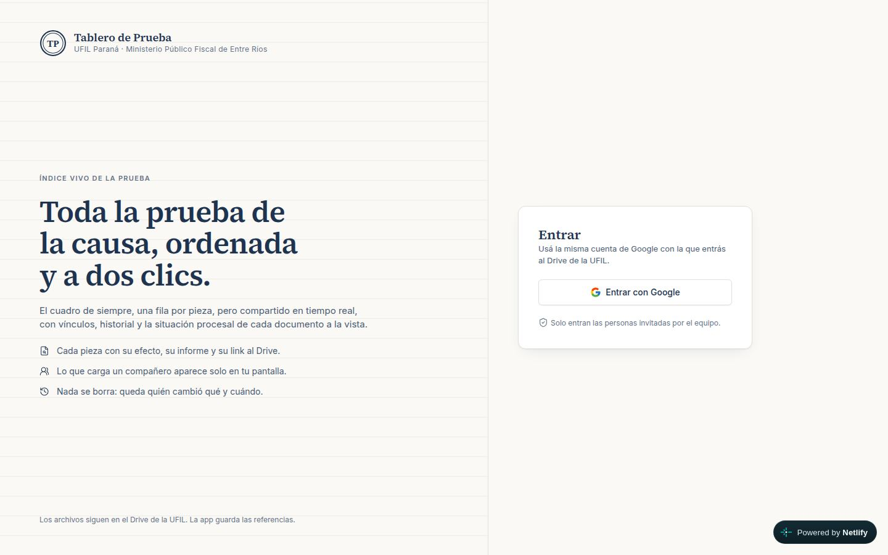
Entraste con otra cuenta de Google (pasa mucho cuando el navegador tiene abierta la cuenta del trabajo o la personal). Tocá Salir, volvé a Entrar con Google y elegí la cuenta invitada. Si igual no te deja, avisale a Rober.
La primera vez que entrás, la app te reconoce por el alias con el que figurás en las planillas (AGUS, INES, CARLI, ROBER…) y te asigna solos los efectos que ya estaban a tu nombre.
3La pantalla, de un vistazo
Todas las pantallas comparten el mismo marco. Una vez que lo conocés, te movés por toda la app sin pensar.
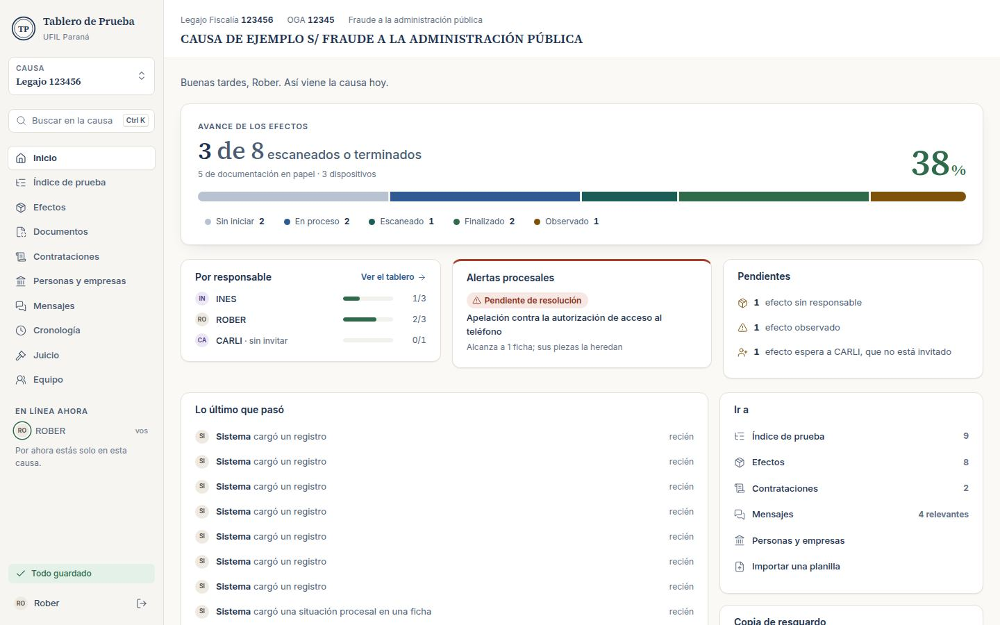
| Dónde | Qué es |
|---|---|
| Arriba a la izquierda | El selector de Causa. La app sirve para cualquier legajo; si trabajás en más de uno, cambiás desde acá. |
| Buscar en la causa | El buscador general. También se abre con Ctrl + K desde cualquier pantalla (capítulo 13). |
| El menú | Las secciones: Inicio, Índice de prueba, Efectos, Documentos, Contrataciones, Personas y empresas, Mensajes, Cronología, Juicio y Equipo. El número al lado de Documentos son las sugerencias pendientes de validar. |
| En línea ahora | Quién del equipo tiene la causa abierta en este momento. |
| Todo guardado | El indicador de guardado. Cada cambio se guarda solo; acá ves «Guardando…», «Guardado» o, si se cortó internet, «Sin conexión». |
| Abajo de todo | Tu nombre y el botón para Salir. |
| La cabecera | Legajo de Fiscalía, número de OGA, delito y carátula de la causa, siempre a la vista. |
| La barra de abajo | Cuántas filas estás viendo y el aviso «En vivo»: los cambios del equipo aparecen solos, sin recargar. |
No hay botón de «guardar». Escribís, pasás al campo siguiente y ya quedó guardado para todos. Si dudás, mirá el indicador de abajo a la izquierda.
4Inicio
Es el tablero de mando de la causa: en una sola pantalla ves cómo viene el trabajo, qué está trabado y qué hizo el equipo últimamente. Reemplaza a la planilla «AVANCE DE TAREAS».
- Avance de los efectos: cuántos están escaneados o terminados sobre el total, con la barra por estado (Sin iniciar, En proceso, Escaneado, Finalizado, Observado).
- Por responsable: cuánto lleva cada integrante. «Sin invitar» indica un alias de las planillas que todavía no tiene cuenta. Ver el tablero te lleva a los efectos.
- Alertas procesales: las pruebas con problema procesal (en rojo lacre) y a cuántas fichas alcanza cada una.
- Pendientes: efectos sin responsable, observados o que esperan a alguien que no entró.
- Lo último que pasó: la actividad del equipo, con quién y hace cuánto. Tocando una línea vas a esa ficha.
- Ir a: accesos directos con los totales de cada sección.
- Copia de resguardo: Descargar copia completa baja toda la causa en un .zip (capítulo 16).
5Índice de prueba y ficha de cada pieza
El corazón del tablero: una fila por pieza, como el cuadro Urribarri, pero con su origen, su estado, quién la trabaja y su situación procesal. Una pieza puede ser un documento secuestrado, un expediente, un informe pericial, una extracción, un mensaje, un correo, un informe de un organismo, una testimonial o un audiovisual.
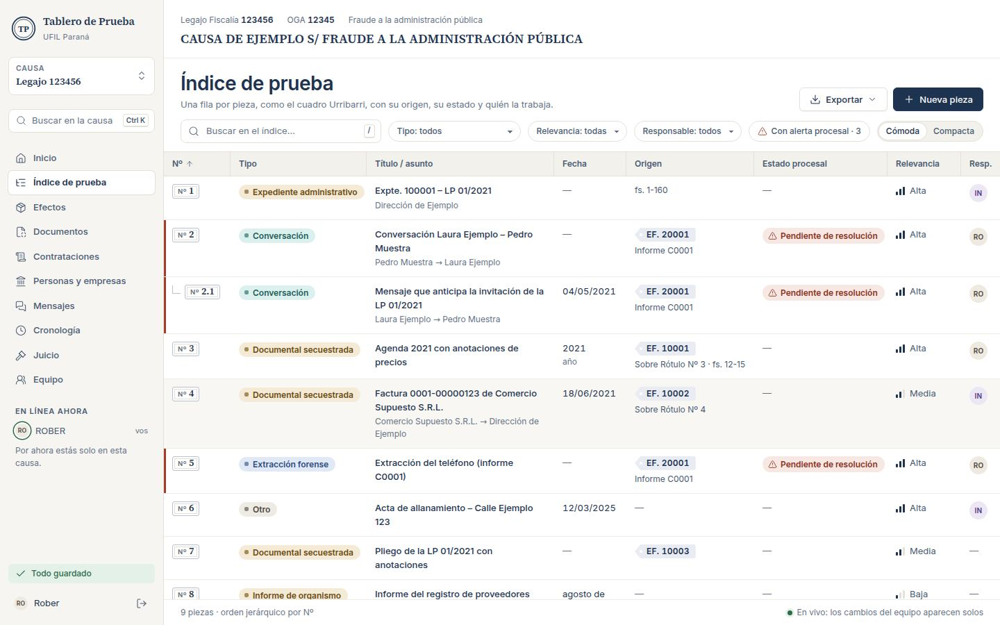
Leer y filtrar la tabla
- La tabla se ordena por número de orden, respetando la jerarquía: 1, 2, 2.1, 2 bis, 3…
- Buscar en el índice filtra por cualquier texto de la fila. La tecla / te lleva directo a ese campo.
- Los filtros Tipo, Relevancia y Responsable se combinan entre sí. Con alerta procesal deja solo las piezas en lacre.
- Cómoda / Compacta cambia la densidad: compacta muestra más filas por pantalla.
- Exportar baja a Excel o CSV exactamente lo que estás viendo, con los filtros aplicados.
La ficha de la pieza
Tocá una fila y se abre la ficha a la derecha, sin perder la tabla.
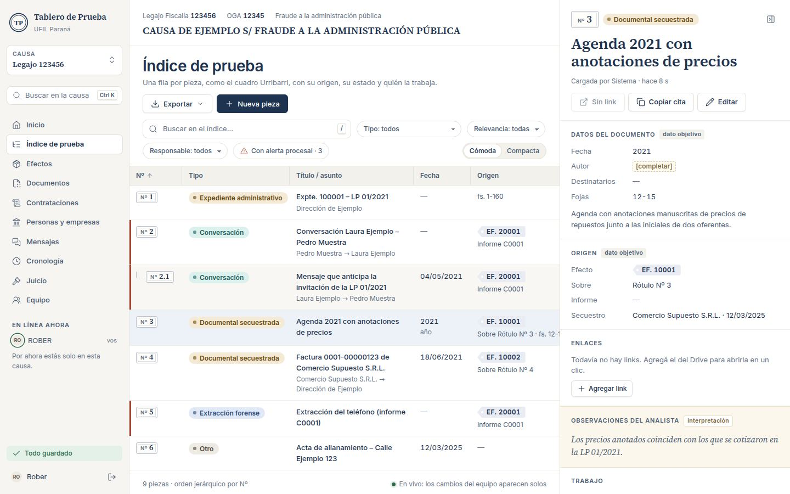
- Abrir en Drive abre el archivo original. Si la pieza todavía no tiene link, dice «Sin link»: agregalo en Enlaces con Agregar link, pegando el link del Drive.
- Copiar cita arma la referencia lista para pegar en un escrito, con el formato Efecto Nº … – título (Sobre Nº …), fs. …, informe …, pieza Nº …. Si falta un dato, la cita lo marca como [completar] en lugar de inventarlo.
- Editar pasa la ficha a modo edición. Cada campo se guarda solo al salir de él.
- Datos del documento: fecha (con su precisión: día, mes, año o aproximada), autor, destinatarios, fojas y resumen del contenido.
- Origen: efecto, sobre, informe del gabinete y dónde y cuándo se secuestró. El efecto es un enlace: te lleva a su ficha.
- Observaciones del analista: por qué importa la pieza y qué prueba. Va separado del dato a propósito.
- Trabajo: relevancia (alta, media, baja o descartada), estado de trabajo (pendiente, en proceso, revisada), responsable y etiquetas libres.
- Estado procesal: si la pieza tiene una incidencia, y si es propia o heredada de su efecto, su procedimiento o su informe.
- Historial: quién cambió qué y cuándo, con el valor anterior tachado.
Cargar una pieza nueva
- Tocá Nueva pieza.
- Escribí el número de orden (admite 2.1, 2 bis, 2 ter…), elegí el tipo y poné el título tal como figura en el documento o el asunto del mail.
- Si tenés el link del Drive, pegalo y elegí qué es: original escaneado, transcripción, imagen forense, carpeta u otro.
- Tocá Cargar pieza. Se abre la ficha: completá lo que tengas y dejá vacío lo que no sepas.
Si la pieza sale de un efecto, cargala desde la ficha del efecto con Nueva pieza de este efecto: queda vinculada sola y hereda su situación procesal.
Archivar
Al pie de la ficha está Archivar. La pieza sale del índice pero no se pierde: durante unos segundos aparece Deshacer, y después queda en el historial para recuperarla.
6Efectos secuestrados
Cada cosa secuestrada, de qué allanamiento salió, en qué estado está y quién la trabaja. Reemplaza a «DISTRIBUCIÓN DE TAREAS» y «LISTADO EFECTOS».
Tablero
Cada efecto es una tarjeta en la columna de su estado. Para cambiarle el estado, arrastrá la tarjeta a otra columna: el cambio le aparece al instante a todo el equipo. Cada tarjeta muestra el número, la descripción, si tiene incidencias procesales, cuántas piezas salieron de él y el responsable.
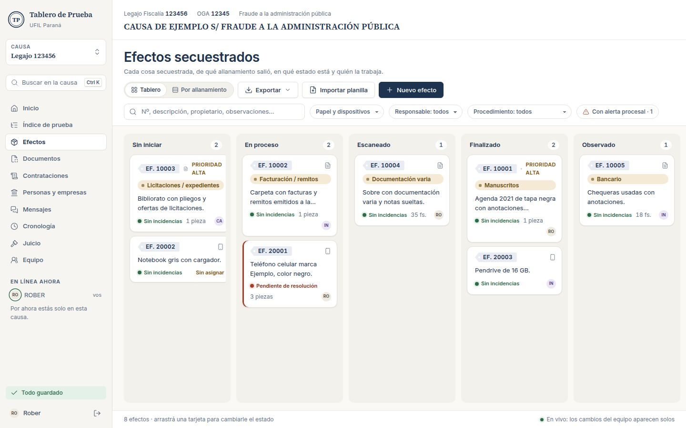
Por allanamiento
La misma información en una tabla agrupada por procedimiento (fecha y domicilio). Con las casillas de la izquierda podés marcar varios efectos y cargarles juntos una situación procesal con Marcar situación procesal.
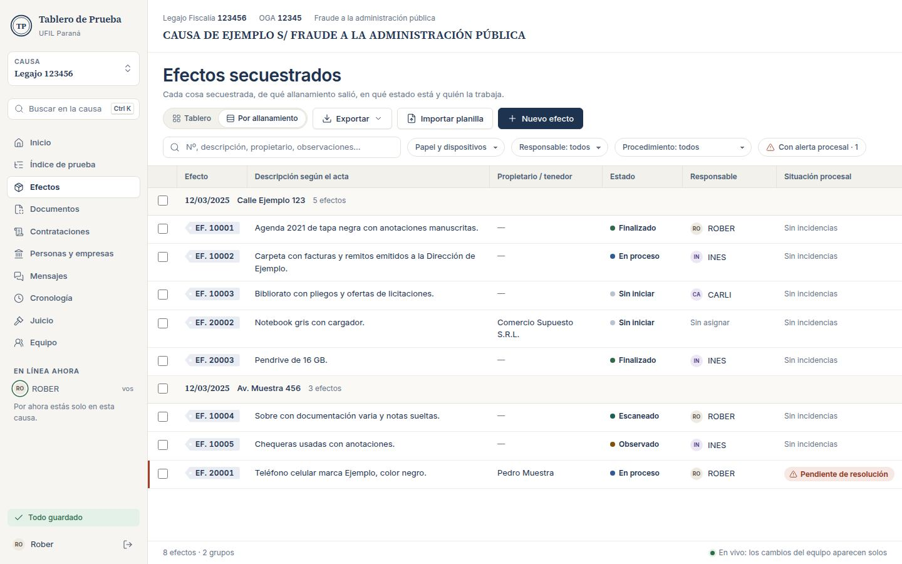
La ficha del efecto
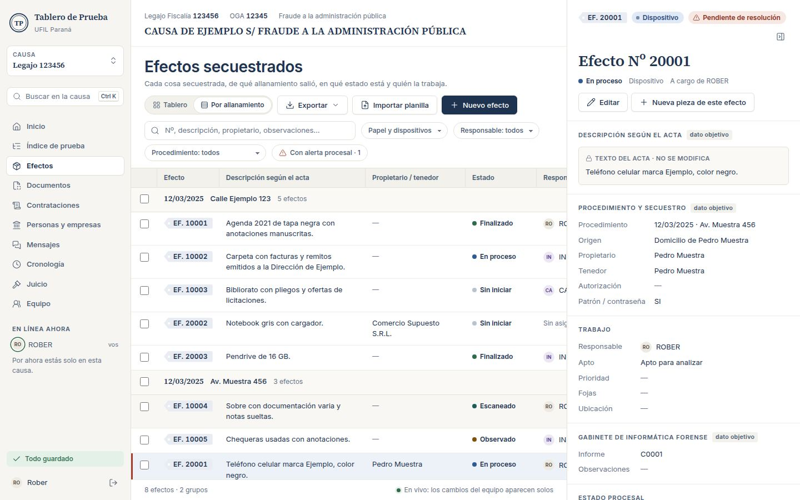
- Descripción según el acta: el texto tal cual figura en el acta. No se edita.
- Procedimiento y secuestro: de qué allanamiento sale, propietario, tenedor, autorización y patrón o contraseña del dispositivo.
- Trabajo: responsable, si está apto para analizar, prioridad, fojas aproximadas, ubicación física y link del escaneo.
- Gabinete de Informática Forense: el informe de extracción y sus observaciones.
- Estado procesal: las incidencias del efecto. Todo lo que se marque acá lo heredan sus piezas.
- Nueva pieza de este efecto y la lista de piezas que ya salieron de él.
Con Marcar situación procesal se registra un planteo (exclusión, nulidad, apelación, casación u otro) y su situación: Admisibilidad cuestionada, Pendiente de resolución o Excluida. Desde ese momento, el efecto y todas sus piezas se ven en lacre, y el tablero avisa si alguien quiere usarlas en el juicio.
Para cargar efectos desde una planilla (LISTADO EFECTOS, DISTRIBUCIÓN DE TAREAS o cualquiera parecida) usá Importar planilla; el paso a paso está en el capítulo 16.
7Documentos y escaneos
Acá se «leen» los escaneos para poder buscar adentro de ellos. Una palabra de una factura, un remito o un expediente te lleva directo a la página donde aparece.
- Bajá del Drive el PDF o la carpeta entera (en el Drive: clic derecho sobre la carpeta → Descargar, y descomprimí el .zip).
- En Documentos, arrastrá los archivos o la carpeta, o usá Leer escaneos o Elegir carpeta.
- La app lee cada página: si el PDF ya trae texto, lo toma tal cual; si la página es una imagen, la lee con reconocimiento de texto (OCR) en castellano. Arriba ves el avance.
- Podés seguir trabajando en otra pantalla mientras lee. Lo único que no hay que hacer es cerrar la pestaña.
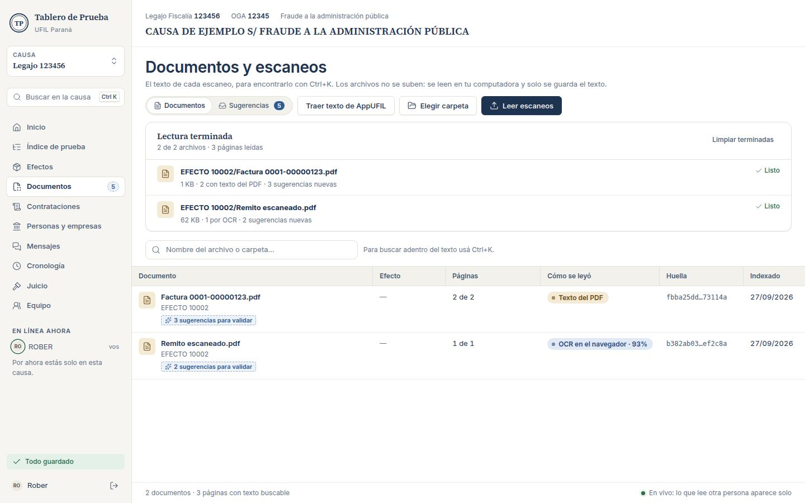
El archivo no se sube a ningún lado. Se lee en tu computadora y solo viaja el texto de cada página. Cada archivo se identifica por su huella digital (SHA-256): si lo vuelve a arrastrar otra persona, o si se cortó a la mitad, la app lo reconoce y sigue desde donde quedó, sin duplicar.
Lee bien lo impreso (facturas, remitos, expedientes). Lo escrito a mano, como las agendas, casi no lo lee. El texto leído por máquina sirve para encontrar el documento, no para citarlo: citá siempre el original.
La ficha del documento
Tocando un documento ves el texto de cada página, podés buscar adentro, abrirlo en el Drive y, con Crear pieza con este documento, sumarlo al índice con su huella.
Sugerencias para validar
Al leer, la app propone de qué efecto es el documento (si la carpeta se llama, por ejemplo, «EFECTO 10002»), qué contratación menciona (por el identificador o el número de expediente), qué persona (por el CUIT) y si ya es una pieza del índice. Nada se aplica solo: en Sugerencias alguien del equipo toca Confirmar (y queda con su nombre) o Descartar (y no vuelve a aparecer).
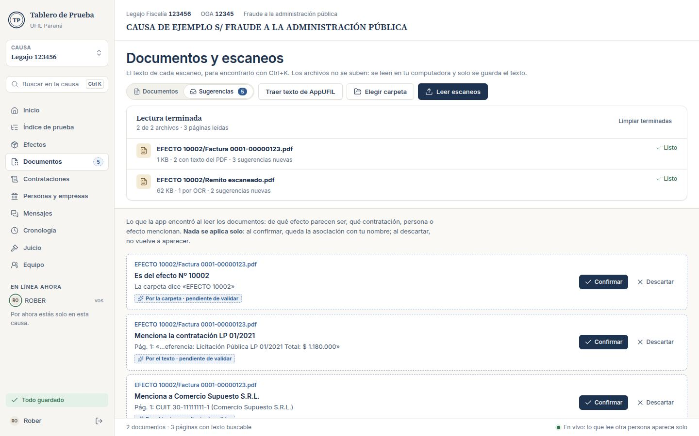
Traer texto de AppUFIL: si los escaneos ya se procesaron en AppUFIL, no hace falta volver a leerlos. Desde ese botón se baja un pequeño programa que arma un archivo con el texto, y ese archivo se trae acá. Los documentos se reconocen por su huella.
8Contrataciones
Una ficha por licitación, solicitud de cotización o contratación directa: el trámite paso a paso con fojas y firmantes, el cuadro comparativo de ofertas y la prueba que la respalda. Es la vista que muestra el hecho completo.
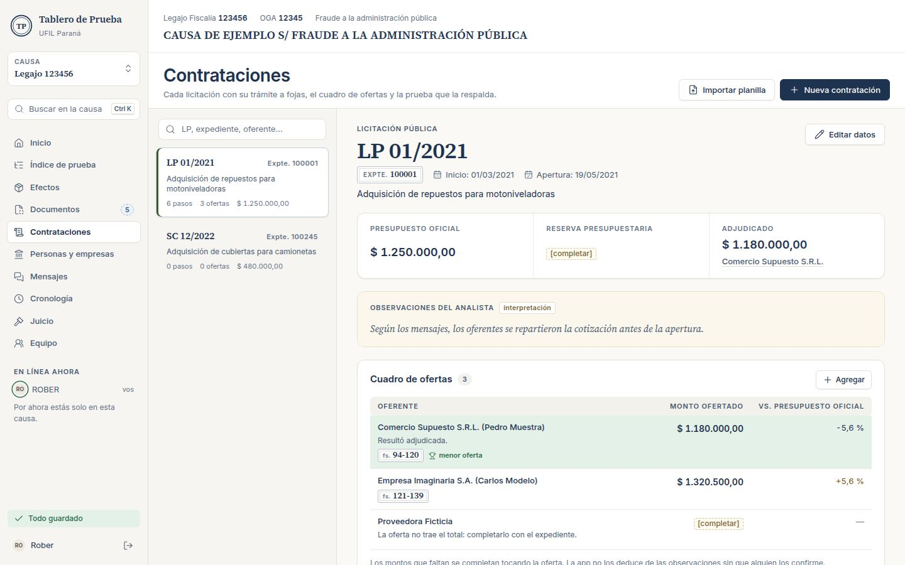
- Cabecera: tipo de procedimiento, identificador, expediente, fecha de inicio, apertura de sobres y objeto.
- Montos: presupuesto oficial, reserva presupuestaria y monto adjudicado, con el adjudicatario (su nombre lleva a su ficha).
- Observaciones del analista: el porqué de la contratación en la causa, en tono de interpretación.
- Cuadro de ofertas: cada oferente con su monto, las fojas, el link a la oferta y la diferencia contra el presupuesto oficial. La menor oferta se marca sola. Debajo de cada oferente se lee su observación (por ejemplo, qué ítems se le adjudicaron).
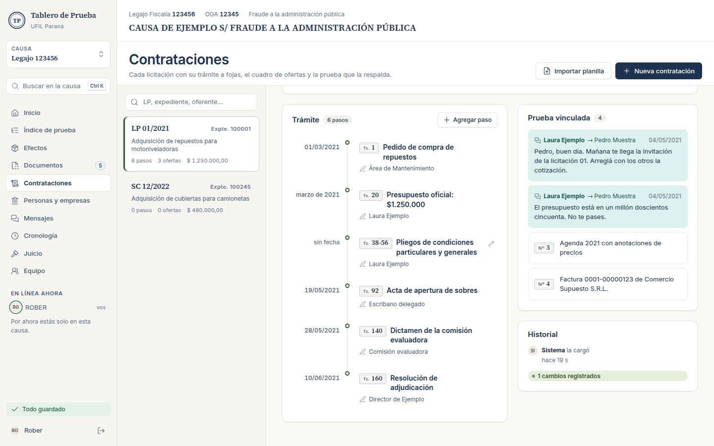
- Trámite: los pasos a fojas. Si el expediente dice solo «marzo de 2021», se muestra así, sin inventar el día. Agregar paso suma uno; el lápiz de cada paso lo edita.
- Prueba vinculada: los mensajes y las piezas que se vincularon a esta contratación. Tocando uno vas a su conversación o a su ficha.
- Historial: los cambios de la ficha.
Cargar y completar
- Nueva contratación pide el identificador (por ejemplo, «LP 05/2020»), el expediente, el tipo de procedimiento y el objeto.
- Editar datos abre todos los campos: montos (escritos como en el expediente, 18.415.263,50), fechas, link al expediente y observaciones.
- En el cuadro, Agregar suma una oferta; tocando una oferta se completa o corrige.
- Para traer una planilla con una hoja por licitación (como EXPEDIENTES DE CONTRATACIÓN), usá Importar planilla (capítulo 16).
Los montos que faltan se ven como [completar]. La app nunca los deduce de las observaciones: los carga una persona, mirando el expediente.
9Personas y empresas
El directorio de la causa: quién es quién, con su rol, su cargo, sus teléfonos, su CUIT o DNI y cómo figura agendado en los celulares. Y el grafo que muestra cómo se relacionan.
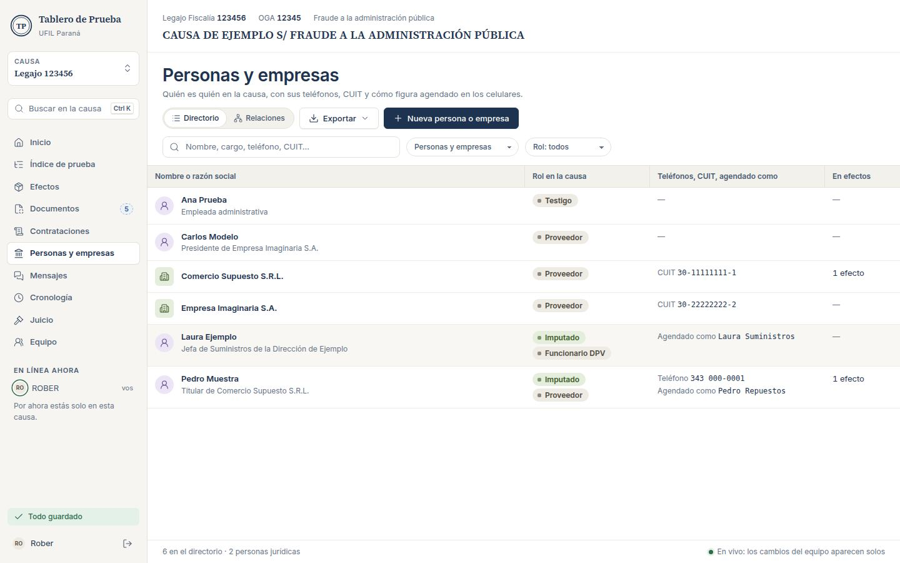
La ficha de cada persona
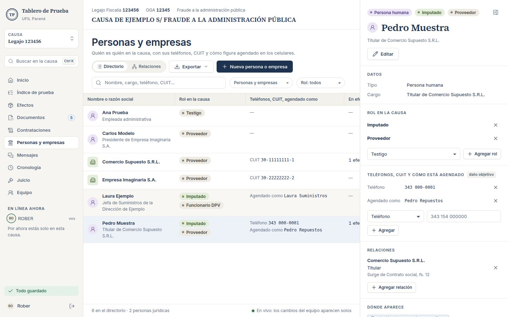
- Roles y cargo. Una persona puede tener más de un rol (por ejemplo, imputado y funcionario).
- Identificadores: teléfonos, CUIT, DNI, correo y cómo figura agendado. El buscador los encuentra, así que un número de teléfono te lleva a la persona.
- Relaciones: con quién se vincula y de dónde surge. Agregar relación suma una.
- Dónde aparece: contrataciones en las que ofertó o fue adjudicataria, piezas, efectos, conversaciones y mensajes, y el juicio.
Nueva persona o empresa carga una ficha nueva con su rol y su primer identificador.
Relaciones
Con Relaciones ves el grafo: quién es socio, familiar o empleado de quién, qué empresas ofertaron en cada contratación y quiénes aparecen juntos en una conversación.
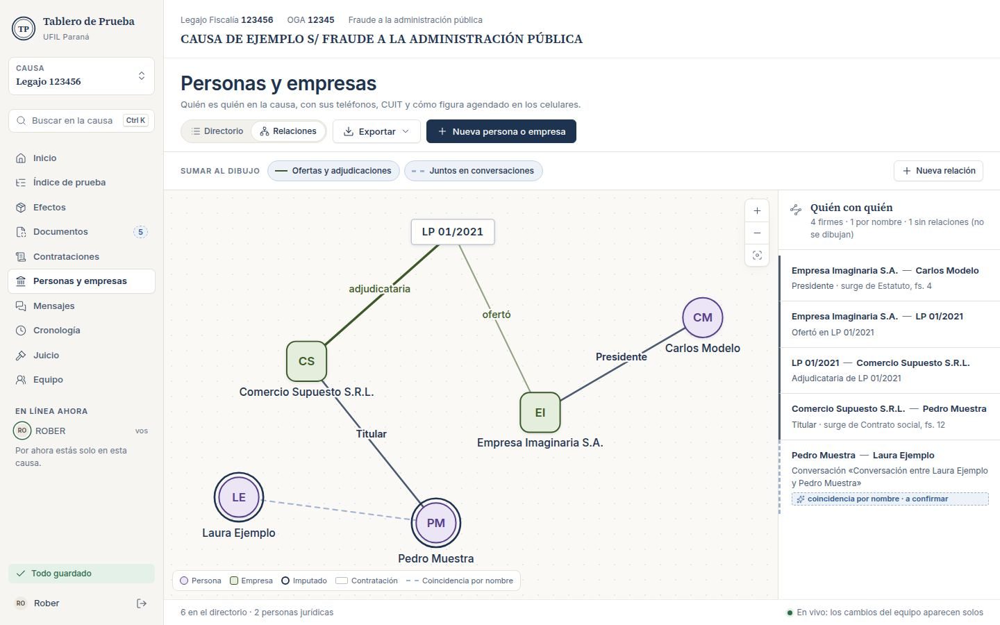
- Sumar al dibujo agrega o quita capas: Ofertas y adjudicaciones y Juntos en conversaciones.
- Los botones + y − acercan y alejan, y el tercero vuelve a encuadrar todo el dibujo. Tocando un nodo se abre la ficha.
- La columna Quién con quién lista cada relación con su origen.
- Tocá Nueva relación y elegí las dos fichas.
- Escribí qué relación tienen (socio, familiar, empleado…).
- Completá de dónde surge (contrato social, efecto, fojas): así cualquiera puede ir a verificarla.
Salen de nombres que aparecen en la misma conversación. Son una coincidencia a confirmar, no una identificación.
10Mensajes e informe de relevamiento
Las conversaciones extraídas de los teléfonos, como un chat, en orden y con la fecha de cada mensaje. Acá se marcan los relevantes, se escribe por qué importan, se vinculan a su contratación y sale el informe de relevamiento en Word.
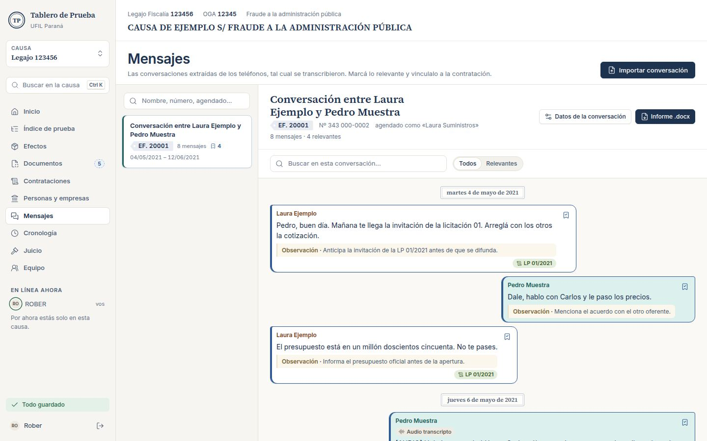
Leer y marcar
- Elegí la conversación en la lista de la izquierda (se busca por nombre, número o cómo estaba agendado).
- Buscar en esta conversación encuentra y resalta palabras, sin importar tildes. Relevantes muestra solo los marcados.
- Para marcar un mensaje como relevante, tocá el marcador de la esquina, o elegilo y apretá R. Queda marcado para todo el equipo al instante.
- Tocá el mensaje para abrir su ficha: escribí la observación (por qué es relevante y con qué se vincula) y, en Vínculos, elegí la contratación o la pieza que prueba y tocá Vincular.
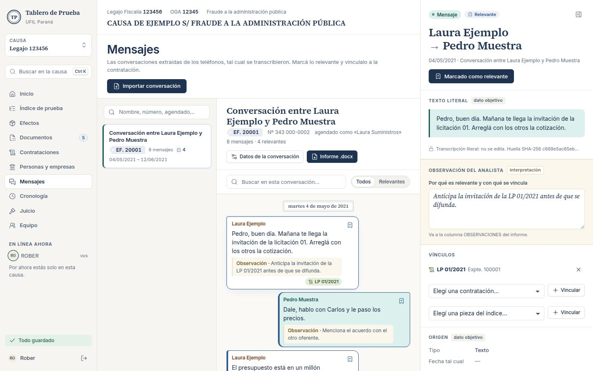
Datos de la conversación
El botón Datos de la conversación guarda el dispositivo, el número de efecto, el informe de extracción del Gabinete, el titular del teléfono, el número de la conversación, cómo estaba agendado y el período. Son los datos que usa el informe: completalos antes de sacarlo.
El informe de relevamiento
- Tocá Informe .docx. Revisá los datos del encabezado: lo que falte va a salir como [completar: …].
- Si el teléfono tiene otras conversaciones, podés sumarlas al mismo informe.
- Tocá Descargar .docx. Sale con la plantilla del equipo: Palatino Linotype 11, justificado, interlineado 1,5, con la referencia del legajo, los párrafos de introducción y la transcripción por conversación y en orden.
- Cada mensaje lleva Fecha, Emisor (el titular del teléfono analizado), Remitente (quien envía el mensaje), el Mensaje literal y las OBSERVACIONES con la contratación vinculada. Revisalo en Word antes de firmarlo.
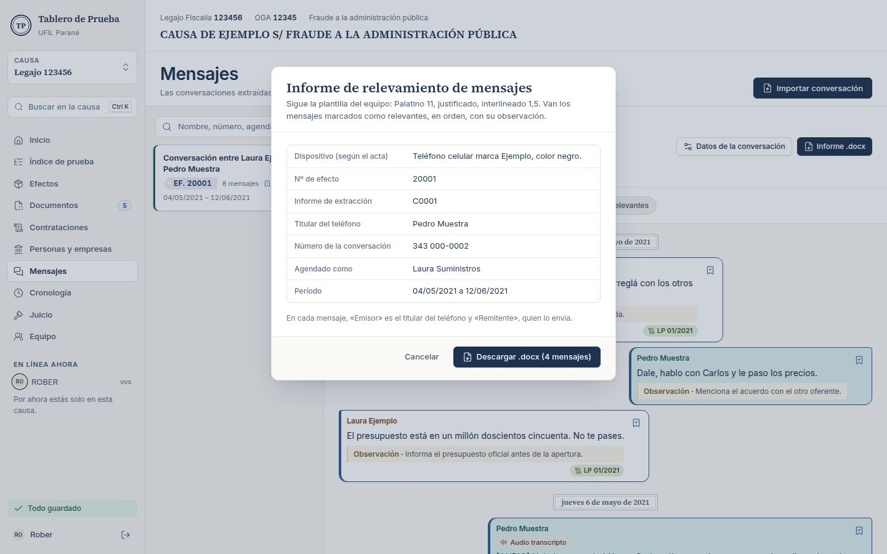
Importar una conversación
- Bajá la transcripción del Drive como Word (Archivo → Descargar → Microsoft Word (.docx)). También sirve el .txt que exporta WhatsApp, o pegar el texto.
- Tocá Importar conversación y arrastrá el archivo.
- La app separa fecha, remitente y mensaje y te muestra todo en una tabla para revisar. Las notas entre paréntesis del analista no se importan como mensajes; las notas al pie pasan a la observación. Destildá lo que no sea un mensaje.
- Completá título, participantes, efecto, titular, número y cómo estaba agendado, y tocá Importar. El texto queda literal y ya no se puede editar.
Desde un reporte de UFED: exportá el reporte a Excel (.xlsx) en UFED Reader y arrastralo en el mismo lugar. La app encuentra la hoja de chats, reconoce las columnas y te deja importar cada chat como una conversación. Si una fecha puede leerse como día/mes o mes/día, te avisa.
11Cronología
Todo lo que tiene fecha, en una sola línea de tiempo: piezas, mensajes relevantes, pasos del trámite de las contrataciones, allanamientos, actos procesales y planteos. Ideal para mostrarle al fiscal la historia completa.
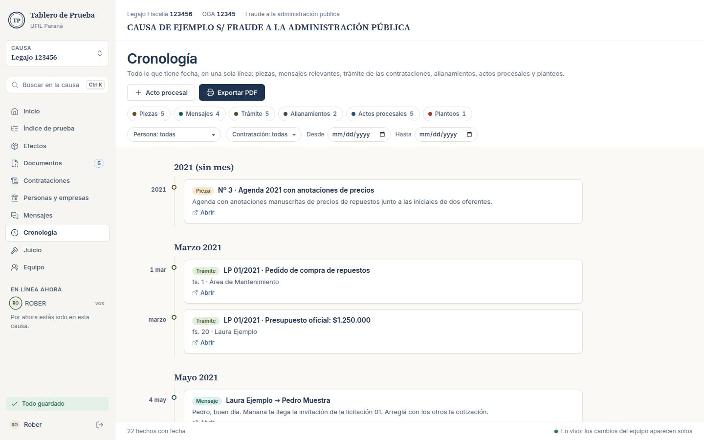
- Los botones de arriba (Piezas, Mensajes, Trámite, Allanamientos, Actos procesales, Planteos) filtran por tipo: si no tocás ninguno se ve todo; si tocás uno o varios, se ven solo esos. El número dice cuántos hay de cada tipo.
- Persona y Contratación filtran la línea de tiempo; Desde y Hasta acotan las fechas. Limpiar filtros vuelve a mostrar todo.
- Acto procesal carga una audiencia, una resolución, un planteo o un allanamiento, con su fecha y el link al acta.
- Exportar PDF imprime la cronología tal como la estás viendo, con los filtros elegidos.
Para preparar una audiencia, filtrá por la contratación o por la persona y exportá el PDF: queda la historia de ese hecho en una sola hoja.
12Preparación del juicio
El punteo de la prueba para el debate, heredero de «Prueba a mostrar en debate con testigos»: qué se ofrece, cómo se incorpora, con quién, si se entregó a la defensa, y los avisos de lo que falta resolver.
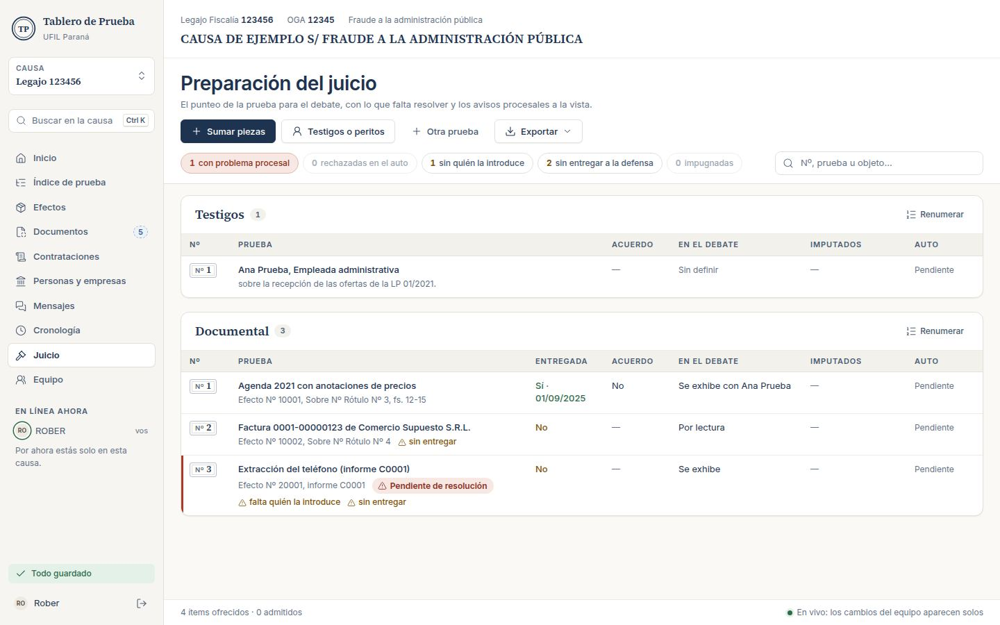
- Sumar piezas agrega piezas del índice, en el orden en que las querés numerar. Si alguna tiene problema procesal, el tablero lo dice antes de confirmar y el botón pasa a decir «Sumar igual».
- Testigos o peritos suma personas del directorio (primero aparecen las que ya tienen ese rol). Otra prueba sirve para informativa o instrumental que no está en el índice.
- Tocá cada fila para completar su ficha: cómo se nombra en el escrito, qué prueba o sobre qué declara, si se exhibe o se incorpora por lectura, con quién se introduce, si se entregó a la defensa, el acuerdo probatorio, los imputados vinculados y, después de la audiencia, qué dijo el auto de apertura.
- Revisá los avisos: con problema procesal, rechazadas en el auto, sin quién la introduce, sin entregar a la defensa e impugnadas. Tocando uno ves solo esas filas.
- Exportar → Listado para la remisión (.docx) arma el ofrecimiento por clase (A.- TESTIMONIAL, B.- DOCUMENTAL…), numerado y con el formato de la fiscalía. Planilla del punteo (Excel) baja la tabla completa. Si quitás una prueba, Renumerar corre los números para que no queden salteados.
13El buscador (Ctrl + K)
Desde cualquier pantalla, Ctrl + K (o «Buscar en la causa», arriba a la izquierda) abre el buscador de toda la causa. Es la forma más rápida de encontrar cualquier cosa.
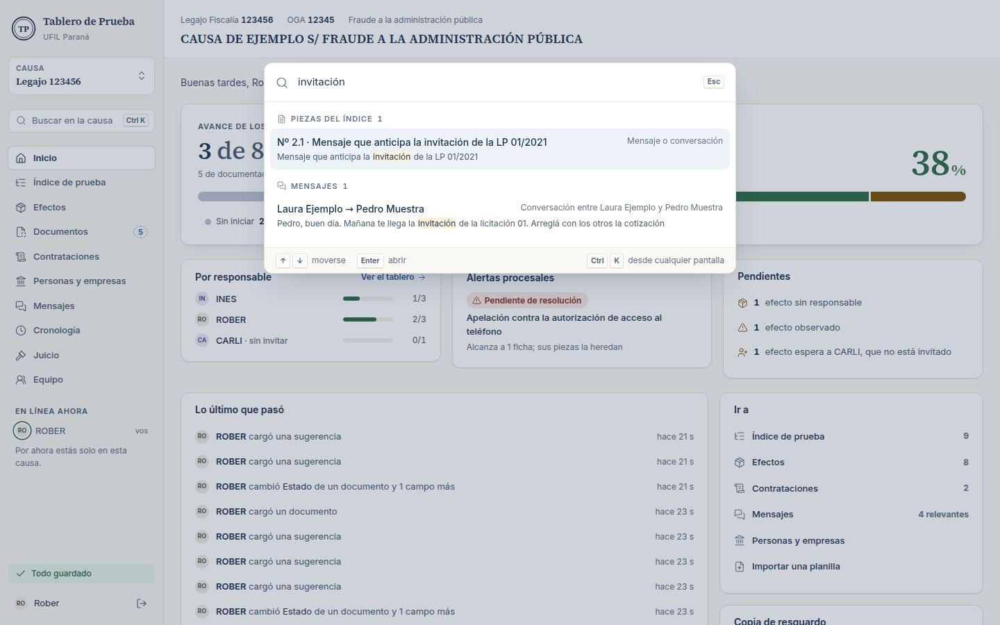
- Busca en piezas, efectos, personas (también por teléfono o por cómo estaban agendadas), contrataciones, el texto de todos los mensajes y el texto de los escaneos leídos.
- No distingue tildes ni mayúsculas: «invitacion» encuentra «Invitación».
- Movete con las flechas y abrí con Enter. Un mensaje abre la conversación justo en ese punto; un escaneo, la página con la palabra resaltada.
- Un número de efecto (por ejemplo, 10001) te lleva directo a su ficha.
La prueba de fuego: si el fiscal pregunta por «el mensaje donde le dice que arregle la cotización», escribí dos o tres palabras que recuerde. En segundos tenés el mensaje, la conversación, el efecto del que sale, el informe que lo respalda y la contratación con la que se vincula.
14Equipo
Quién está habilitado para entrar a la causa y con qué alias figura en las planillas. Todos los invitados tienen los mismos permisos: pueden ver, cargar y editar todo.
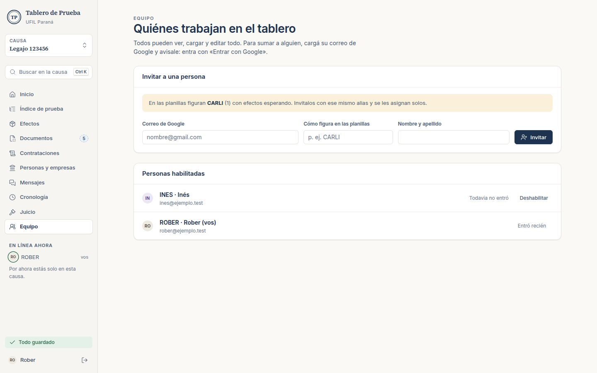
- Cargá el Correo de Google de la persona, Cómo figura en las planillas (por ejemplo, CARLI) y, si querés, su nombre y apellido.
- Tocá Invitar. La app arma un mensaje con las instrucciones para mandárselo por WhatsApp o por correo.
- Cuando la persona entra por primera vez, se le asignan solos los efectos que figuraban con su alias.
Desde la misma pantalla se puede cambiar el alias de alguien (con el lápiz que aparece al pasar por su nombre) o Deshabilitar a quien deja de trabajar en la causa. Si un alias queda en dos cuentas, sus efectos no se asignan a ninguna hasta que quede en una sola: la pantalla lo avisa.
15Trabajar a la vez sin pisarse
El tablero está hecho para que varias personas trabajen al mismo tiempo, cada una desde su computadora, y el fiscal consulte cuando quiera.
Todo en vivo
Lo que carga una persona le aparece al resto en segundos, sin recargar la página. «En línea ahora» muestra quién está conectado.
Si dos personas tocan el mismo campo
El tablero no pisa a nadie. Si alguien cambió un campo mientras vos lo editabas, te avisa: «Inés cambió este campo mientras lo editabas. Ahora dice: … Tu cambio todavía no se guardó.» Elegís entre Guardar el mío igual o Quedarme con el de Inés. En cualquier caso, los dos valores quedan en el historial.
Si se corta internet
Seguí trabajando. El indicador de abajo a la izquierda pasa a «Sin conexión» y lo que cargues queda en cola; cuando vuelve la conexión, se guarda solo y te avisa.
El historial
Cada ficha tiene su historial: quién cambió qué, cuándo, qué decía antes y qué dice ahora. No es para controlar a nadie: sirve para ver qué hizo el otro y recuperar algo si se pisó por error.
16Exportar, copias y planillas
Exportar lo que estás viendo
En Índice, Efectos y Personas, Exportar baja a Excel o CSV exactamente lo que está en pantalla, con los filtros aplicados. En Juicio, el listado para la remisión sale en Word y el punteo en Excel. El informe de relevamiento sale en Word y la cronología en PDF.
Copia completa de la causa
En Inicio, Descargar copia completa baja un .zip con toda la causa: un archivo JSON con todas las tablas (sirve para restaurarla) y una planilla CSV por cada tabla, que se abre con Excel. Conviene guardar una cada tanto en el Drive, además de las copias automáticas.
Importar una planilla de efectos
- Bajá la planilla como Excel: si es de Google Sheets, Archivo → Descargar → Microsoft Excel (.xlsx).
- En Efectos, tocá Importar planilla y arrastrá el archivo.
- Planilla: la app encuentra sola la fila de títulos y si son papeles o dispositivos. Revisá la vista previa.
- Columnas: cada columna viene relacionada con su campo; cambiá lo que haga falta. Lo que marques «No importar» queda afuera.
- Revisión: antes de guardar te dice cuántas filas entran, cuáles ya estaban, cuáles están repetidas o tienen un valor que no reconoce. Nada se corrige por deducción.
- Tocá Importar. Importar dos veces la misma planilla no duplica nada.
Importar EXPEDIENTES DE CONTRATACIÓN
- Bajá la planilla como Excel y, en Contrataciones, tocá Importar planilla.
- Cada hoja con la tabla del trámite (PROCEDIMIENTO, Fs., FECHA, FIRMANTE, OBSERVACIONES) es una contratación. El identificador sale del nombre de la hoja y se puede corregir.
- Las fechas raras («entre el 11 y 17/3/2020», «febrero 2020») se guardan tal cual, sin inventar el día.
- Los montos escritos en las observaciones aparecen sin tildar: tildá solo los que coinciden con el expediente, y tocá Importar.
17Desde el celular
La app funciona en el celular sin instalar nada: abrí la misma dirección en el navegador y entrá con Google. Sirve sobre todo para consultar: buscar una pieza, leer una conversación o mirar una contratación antes de una audiencia.
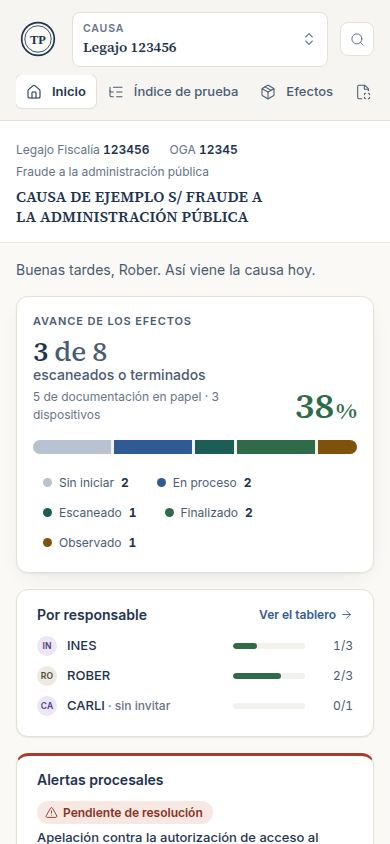
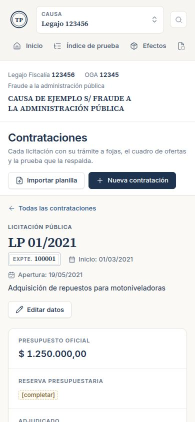
- El menú pasa arriba, en una fila que se desliza con el dedo.
- La lupa de arriba a la derecha abre el buscador.
- Las fichas ocupan toda la pantalla; «Todas las contrataciones» (o la flecha) vuelve a la lista.
- Para agregarla a la pantalla de inicio del teléfono: en el menú del navegador, Agregar a la pantalla principal.
18Preguntas frecuentes y ayuda
Escribile a Rober (Roberto Lacabanne), con una captura de la pantalla si podés. Las ideas para mejorar el tablero también son bienvenidas: está hecho para que le sirva al equipo.
¿Tengo que guardar?
No. Cada campo se guarda solo al pasar al siguiente. Mirá el indicador de abajo a la izquierda.
Borré algo por error, ¿se perdió?
No. Nada se borra de verdad: lo archivado se recupera, y en el historial de la ficha está el valor anterior de cada campo.
¿La app modifica los archivos del Drive?
Nunca. Guarda el link y, cuando lee un escaneo, solo el texto de sus páginas. El original queda intacto.
¿Puedo corregir el texto de un mensaje transcripto?
No: las transcripciones son literales y quedan protegidas con su huella. Si hay un error de transcripción, anotalo en la observación del mensaje.
¿Por qué algo dice [completar]?
Porque ese dato no está cargado. La app no lo inventa: completalo cuando lo tengas.
Veo una línea punteada en el grafo, ¿es una relación?
Todavía no. Es una coincidencia de nombres en una conversación, a confirmar. Si la confirmás, cargala como relación con su «de dónde surge».
¿Por qué una pieza está en rojo?
Porque tiene una situación procesal: admisibilidad cuestionada, pendiente de resolución o excluida, propia o heredada de su efecto. Tocala para ver cuál.
No me deja entrar
Fijate que estés usando la cuenta de Gmail invitada. Si el navegador tiene varias cuentas abiertas, tocá Salir y volvé a elegir. Si sigue sin andar, avisá.
La pantalla se ve rara o no se actualiza
Recargá la página (F5). Lo guardado no se pierde.